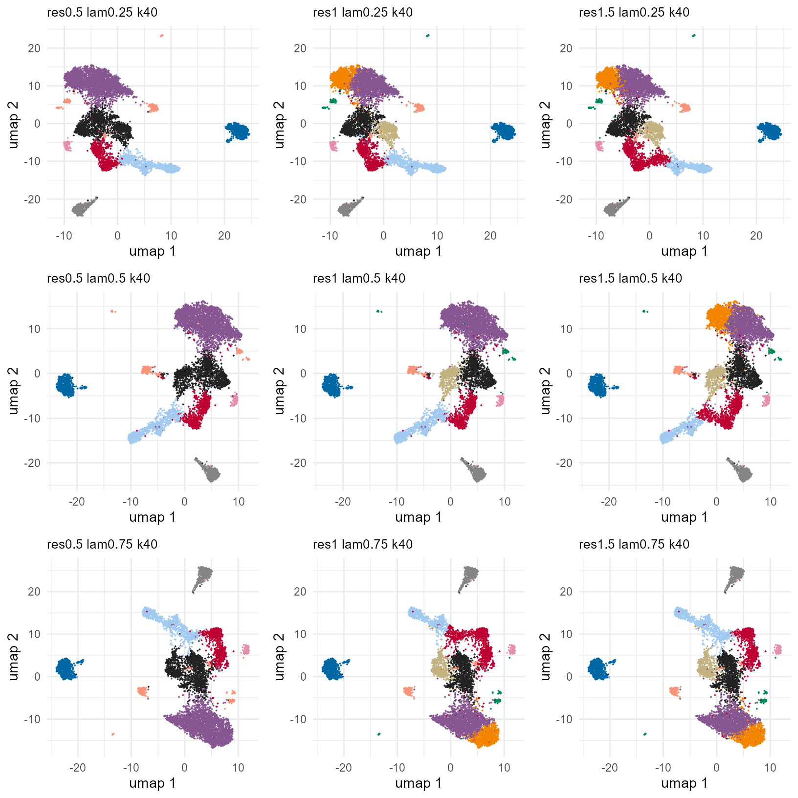
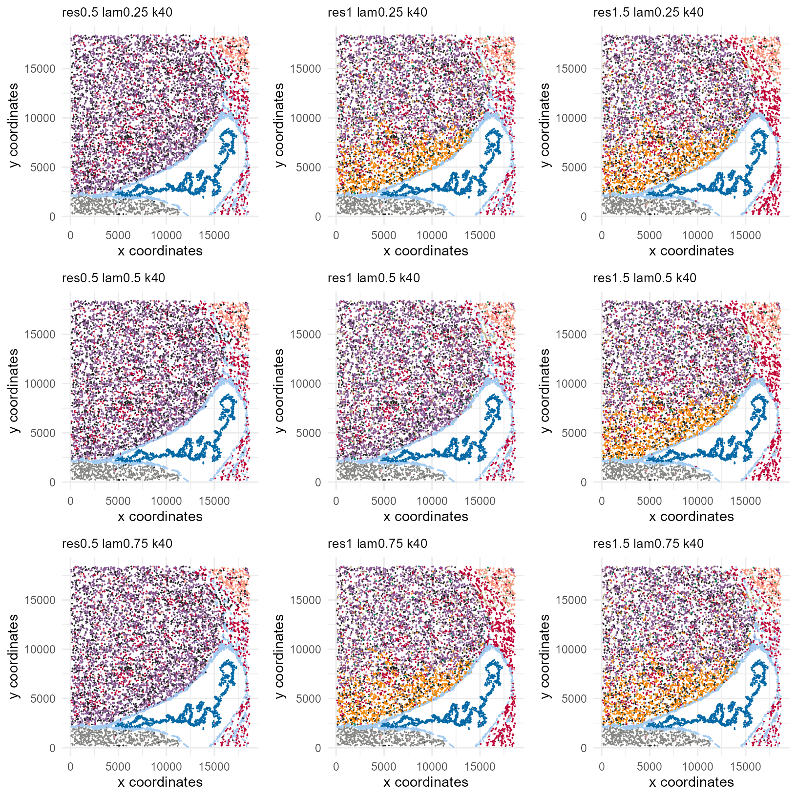

grid-search.RmdThis article describes finding optimal clustering parameters. The ClusterBanksy function performs a grid search of parameters lambda, resolution, and kneighbours.
kneighbours is the number of k neighbours used to construct the shared Nearest Neighbour (sNN) network. resolution is the resolution used in Leiden clustering. Higher resolutions yield more clusters.
The lambda parameter is a mixing parameter \(\in[0,1]\) which determines how much spatial information is incorporated for clustering. Larger values incorporate more spatial information. Let the gene-cell matrix be \(G_O\) and the neighbour feature-cell matrix be \(G_N\). The joint matrix used for clustering is the (row) concatenation of \(\sqrt{1-\lambda}\;G_O\) and \(\sqrt{\lambda}\;G_N\).
We demonstrate how a grid search of the parameter space can be performed.
library(Banksy)
library(gridExtra)
expr <- as.matrix(readRDS(system.file('/extdata/expression.rds', package = 'Banksy')))
locs <- readRDS(system.file('/extdata/locations.rds', package = 'Banksy'))
bank <- BanksyObject(own.expr = expr,
cell.locs = locs)
bank <- NormalizeBanksy(bank)
bank <- ComputeBanksy(bank)
#> Computing Banksy matrices...
#> Spatial mode is kNN_r, k_geom = 10
#> Banksy matrix: 27.1 sec elapsed
bank <- ScaleBanksy(bank)Define a parameter space. We explore different combinations of lambda and resolution, fixing kneighbours.
lambda <- seq(0.25, 0.75, by = 0.25)
resolution <- seq(0.5, 1.5, by = 0.5)
kneighbours <- 40
set.seed(1234)
bank <- ClusterBanksy(bank,
lambda = lambda,
resolution = resolution,
kneighbours = kneighbours)
#> Iteration 1 out of 9
#> Finished clustering for Lambda=0.25, Resolution=0.5, K Neighbours=40
#> Iteration 2 out of 9
#> Finished clustering for Lambda=0.25, Resolution=1, K Neighbours=40
#> Iteration 3 out of 9
#> Finished clustering for Lambda=0.25, Resolution=1.5, K Neighbours=40
#> Iteration 4 out of 9
#> Finished clustering for Lambda=0.5, Resolution=0.5, K Neighbours=40
#> Iteration 5 out of 9
#> Finished clustering for Lambda=0.5, Resolution=1, K Neighbours=40
#> Iteration 6 out of 9
#> Finished clustering for Lambda=0.5, Resolution=1.5, K Neighbours=40
#> Iteration 7 out of 9
#> Finished clustering for Lambda=0.75, Resolution=0.5, K Neighbours=40
#> Iteration 8 out of 9
#> Finished clustering for Lambda=0.75, Resolution=1, K Neighbours=40
#> Iteration 9 out of 9
#> Finished clustering for Lambda=0.75, Resolution=1.5, K Neighbours=40
#> 110 sec elapsedThis populates the meta.data slot of the BanksyObject with cluster labels for each combination of parameters.
head(meta.data(bank)[,1:5])
#> cell_ID n_features res0.5_lam0.25_k40 res1_lam0.25_k40
#> cell_4 cell_4 24 2 2
#> cell_5 cell_5 28 1 1
#> cell_6 cell_6 209 1 4
#> cell_7 cell_7 117 3 3
#> cell_8 cell_8 38 4 5
#> cell_9 cell_9 51 2 7
#> res1.5_lam0.25_k40
#> cell_4 7
#> cell_5 1
#> cell_6 3
#> cell_7 4
#> cell_8 11
#> cell_9 8To compare between clusters obtained with different combination of parameters (a parameter run), the Banksy package implements ConnectClusters which performs a mapping to harmonise cluster labels between different parameter runs.
bank <- ConnectClusters(bank)
#> Mapping clusterings to res1_lam0.25_k40
#> Processing res0.5_lam0.25_k40
#> Processing res1.5_lam0.25_k40
#> Processing res0.5_lam0.5_k40
#> Processing res1_lam0.5_k40
#> Processing res1.5_lam0.5_k40
#> Processing res0.5_lam0.75_k40
#> Processing res1_lam0.75_k40
#> Processing res1.5_lam0.75_k40This updates the meta.data slot with new cluster labels and colours that can be used for visualisation. We can visualise connected output as follows.
First, obtain cluster names:
mdnames <- names(meta.data(bank))
clustnames <- mdnames[grep("^res", mdnames)]
clustnames
#> [1] "res0.5_lam0.25_k40" "res1_lam0.25_k40" "res1.5_lam0.25_k40"
#> [4] "res0.5_lam0.5_k40" "res1_lam0.5_k40" "res1.5_lam0.5_k40"
#> [7] "res0.5_lam0.75_k40" "res1_lam0.75_k40" "res1.5_lam0.75_k40"Generate UMAPs and Spatial Dimension plots for the above clusters:
umaps <- lapply(clustnames,
function(param) plotUMAP(bank, param, legend = FALSE,
pt.size = 0.01, main.size = 10))
spatdims <- lapply(clustnames,
function(param) plotSpatialDims(bank, param,
pt.size = 0.01, main.size = 10))One can use the grid.arrange function from gridExtra to conveniently layout all plots for comparison:

